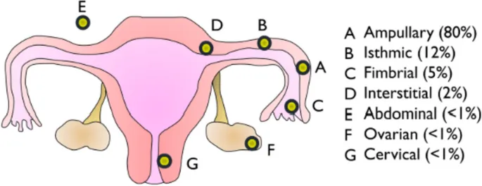
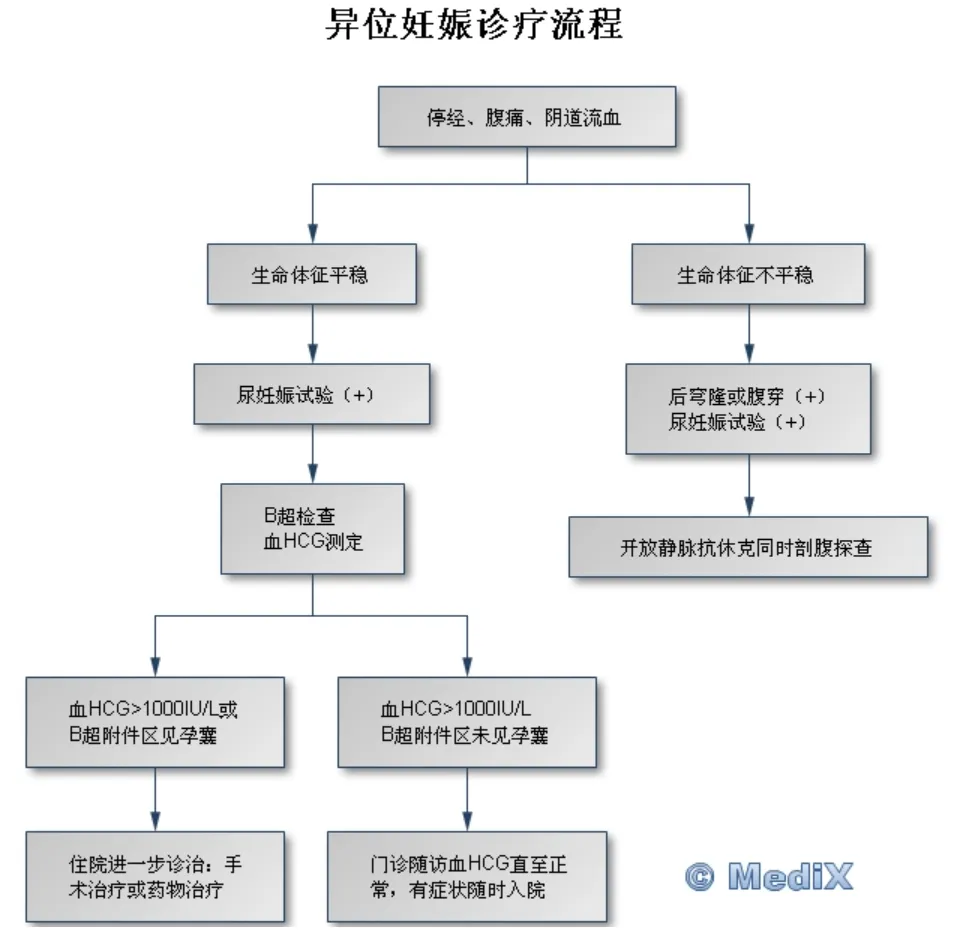

异位妊娠¶
定义¶
异位妊娠(EP)，也称为宫外孕，是指受精卵在子宫腔以外的位置着床 。正常妊娠时，受精卵应在输卵管内与精子结合，然后移动到子宫腔内着床。但由于某些原因，受精卵未能到达子宫腔，而在其他位置着床，由此产生异位妊娠。1异位妊娠破裂是妊娠早期孕产妇死亡的主要原因，占所有妊娠相关死亡9%-14%，发生率为5%-10%。2
分类（按发生部位）¶
输卵管妊娠：
壶腹部：约占80%，是输卵管妊娠最常见的部位
峡部：约占12%，峡部妊娠容易发生破裂
伞端：约占5%
间质部：约占2%，是输卵管穿过子宫壁的部分，此处妊娠破裂时可能导致大出血
卵巢妊娠：受精卵直接在卵巢表面着床，非常罕见
腹腔妊娠：受精卵种植在腹膜或其他腹腔器官上，极其罕见
宫颈妊娠：受精卵着床在宫颈管内，也很少见

图1：异位妊娠发生部位及概率3
病因¶
盆腔炎性疾病 (PID)¶
是导致输卵管妊娠的最常见原因。炎症会损伤输卵管，可使输卵管粘膜皱襞粘连，导致管腔狭窄，粘膜破坏，上皮纤毛缺失，输卵管周围粘连，管形扭曲，以上情况影响孕卵在输卵管的正常运行和通过。
输卵管手术史¶
如输卵管结扎或输卵管修复手术，可能增加异位妊娠的风险，输卵管绝育后复通术或输卵管成型术，亦可因疤痕使管腔狭窄、通畅不良而致病。
输卵管发育或功能异常¶
如输卵管过长、肌层发育不良、粘膜纤毛缺如、双管输卵管、额外伞部等，均可成为输卵管妊娠的原因。
盆腔子宫内膜异位症¶
异位于盆腔的子宫内膜，对孕卵可能有趋化作用，促使其在宫腔外着床。
其他¶
-
辅助生殖技术 (ART)：如体外受精 (IVF)，会增加异位妊娠的风险 ；
-
宫内节育器 (IUD) 使用失败：IUD可以有效预防宫内妊娠，但如果IUD使用失败而发生妊娠，则异位妊娠的风险增加；
-
既往异位妊娠史：有异位妊娠史的女性，再次发生异位妊娠的风险较高；
-
吸烟：吸烟会影响输卵管的正常功能，增加异位妊娠的风险；
-
年龄：高龄产妇发生异位妊娠的风险较高。
临床表现¶
异位妊娠的临床表现于着床部位、有无破裂、出血量密切相关。
异位妊娠流产或破裂前，症状和体征均不明显，除短期停经及妊娠表现外，有时出现一侧下腹胀痛。检查时输卵管正常或有肿大。
异位妊娠流产或破裂后，根据病情急缓一般分为急性和陈旧性两种类型，因输卵管妊娠最常见，以下临床表现以输卵管妊娠为例：
急性宫外孕¶
症状¶
-
停经：异位妊娠也属于妊娠，因此通常会有停经史。
-
腹痛：为患者就诊时最主要症状。腹痛系由输卵管膨大、破裂及血液刺激腹膜等多种因素引起。破裂时患者突感一侧下腹撕裂样疼痛，常伴恶心呕吐。若血液局限于病变区，表现为下腹局部疼痛；血液积聚在子宫直肠陷凹时，肛门有坠胀感；出血量过多，血液由盆腔流至腹腔，疼痛即由下腹向全腹扩散；血液刺激膈肌时，可引起肩胛放射性疼痛。
-
阴道出血：多为少量不规则出血，颜色可能为暗红色或咖啡色，淋漓不净
-
晕厥与休克：由于腹腔内急性出血，可引起血容量减少及剧烈腹痛，轻者常有晕厥，重者出现休克，其严重程度与腹腔内出血速度和出血量成正比，即出血越多越急，症状出现越迅速越严重，但与阴道出血量不成正比。
体征¶
一般情况
-
腹腔内出血较多时，呈急性贫血外貌。大量出血时则有面色苍白、四肢湿冷、血压下降等休克症状。
-
体温一般正常，休克时略低，腹腔内血液吸收时可稍升高，但不超过38℃。
腹部检查
-
下腹部有明显压痛、反跳痛，尤以患侧为剧；
-
出血较多时叩诊有移动性浊音；
-
历时较长后形成血凝块，下腹可触及肿块，反复出血使肿块增大变硬。
盆腔检查
-
阴道后穹窿饱满，触痛。宫颈有明显举痛，将宫颈轻轻上抬或向左右摇动时，即可引起剧烈疼痛；
-
子宫稍大而软，内出血多时，子宫有漂浮感；
-
子宫大小与停经月份基本符合，但子宫轮廓不相对称。
陈旧性宫外孕¶
-
指输卵管妊娠流产或破裂后病程长，经反复内出血病情渐趋稳定。
-
此时胚胎死亡，内出血停止，腹痛有所减轻，但所形成的血肿逐渐机化变硬，且与周围组织及器官粘连。
-
其临床特点为阴道不规则出血、阵发性腹痛、附件肿块及低热。低热为腹腔内血液吸收过程引起，如合并继发感染，则表现为高热。
诊断¶
病史询问¶
医生会详细询问您的月经史、孕产史、盆腔炎病史、手术史等，以评估异位妊娠的风险因素。
体格检查¶
包括腹部触诊和盆腔检查，以评估腹部压痛、反跳痛和附件区包块等体征。
实验室检查¶
血清 hCG 检测：人绒毛膜促性腺激素 (hCG) 是妊娠时产生的一种激素。通过检测血清 hCG 水平，可以判断是否妊娠。但异位妊娠时，hCG 水平可能低于正常妊娠。
影像学检查¶
超声检查：经阴道超声检查可以观察子宫腔内是否有妊娠囊，以及附件区的情况。如果在子宫腔外发现妊娠囊，则可以确诊为异位妊娠。
后穹隆穿刺¶
由于腹腔内血液最易积聚在子宫直肠陷凹，即使血量不多，也能经后穹隆窗磁吸出。抽出暗红色不凝血为阳性结果，说明有腹腔内积血存在
诊断性刮宫¶
如果超声检查结果不明确，可以进行诊断性刮宫，然后对刮出物进行病理检查，以判断是否存在绒毛。切片中如见到绒毛，可诊断为宫内妊娠，如仅见蜕膜而无绒毛，虽应考虑为异位妊娠，但不能确诊。
治疗¶
药物治疗¶
适用于病情稳定、无输卵管破裂、血 hCG 水平较低的患者。常用的药物是甲氨蝶呤 (MTX)，可以杀死滋养细胞，使异位妊娠停止生长。
手术治疗¶
-
适用于输卵管破裂、血 hCG 水平较高、药物治疗无效或不适用的患者。
-
输卵管切除术：切除患侧输卵管。
-
保守性手术：切开输卵管，取出妊娠物，保留输卵管。适用于有生育要求的患者。
期待疗法¶
-
仅适用于极少数情况，如hCG水平非常低且持续下降，无明显症状，且能密切随访的患者
-
期待疗法需要严密监测hCG水平变化，一旦出现症状加重或hCG水平上升，应立即采取其他治疗措施。
预后¶
异位妊娠是一种危急重症，如果未能及时诊断和治疗，可能导致输卵管破裂、腹腔内出血，甚至危及生命。经过及时治疗，大部分患者可以痊愈。但异位妊娠会增加再次发生异位妊娠的风险，也可能影响生育能力。
诊疗流程¶

图2：异位妊娠诊疗流程图
就医意见¶
紧急就医指征¶
如果出现以下任何症状，应立即就医：
-
剧烈腹痛：特别是位于下腹部一侧的持续性疼痛。
-
阴道大量出血：出血量明显多于平时月经量或伴有血块。
-
晕厥或休克：由于腹腔内出血导致的血压下降和意识丧失。
-
肩部疼痛：有时异位妊娠破裂会导致血液刺激膈肌，引起肩部放射性疼痛。
预防¶
-
积极治疗盆腔炎性疾病：预防盆腔炎性疾病是预防异位妊娠的重要措施。
-
避免不必要的输卵管手术：如无必要，尽量避免输卵管手术。
-
戒烟：吸烟会增加异位妊娠的风险，因此戒烟有助于预防异位妊娠。
-
合理选择避孕方式：选择合适的避孕方式，避免意外妊娠。
编写者： 颜妞 上传者： 张梓润